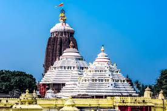
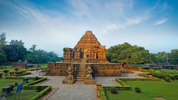
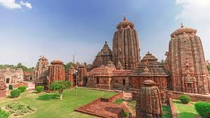
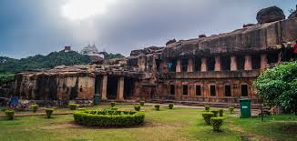

Puri

A holy city famous for the Jagannath Temple, a sacred Hindu temple and one of the Char Dham pilgrimage sites, and the adjacent Puri Beach.
Konark

Home to the Konark Sun Temple, a UNESCO World Heritage Site, famous for its magnificent 13th-century temple designed as a gigantic chariot.
Bhubaneswar

The capital city, known as the 'Temple City of India', with a history spanning over 3,000 years. It features hundreds of ancient Hindu temples, most notably the Lingaraj Temple.
Chilika Lake

The largest coastal lagoon in India and the second-largest in the world, known for its rich biodiversity, particularly as a wintering ground for migratory birds.
Udayagiri and Khandagiri Caves

A group of rock-cut shelters near Bhubaneswar, known for their archaeological, historical, and religious importance, mainly for Jain monks.